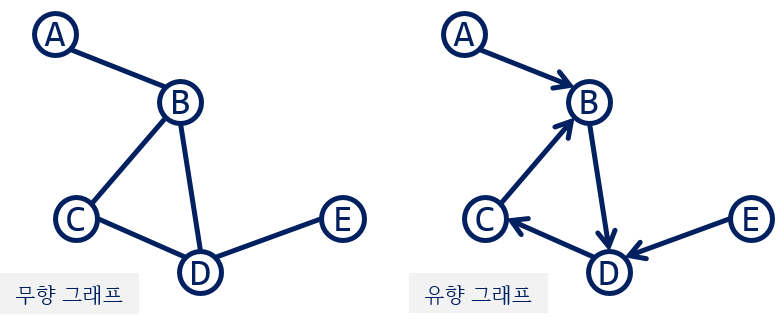
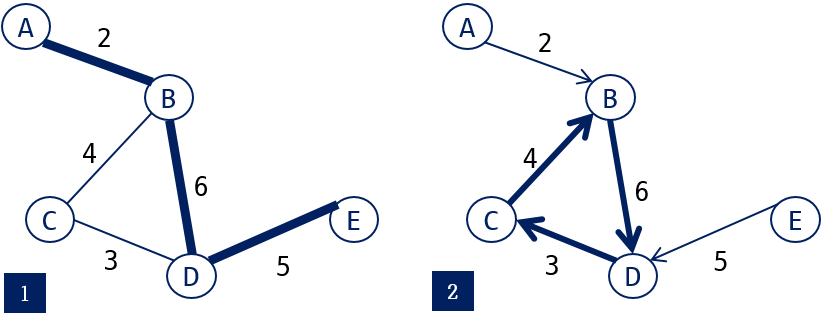
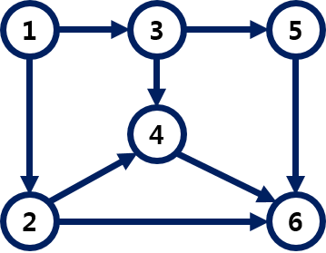
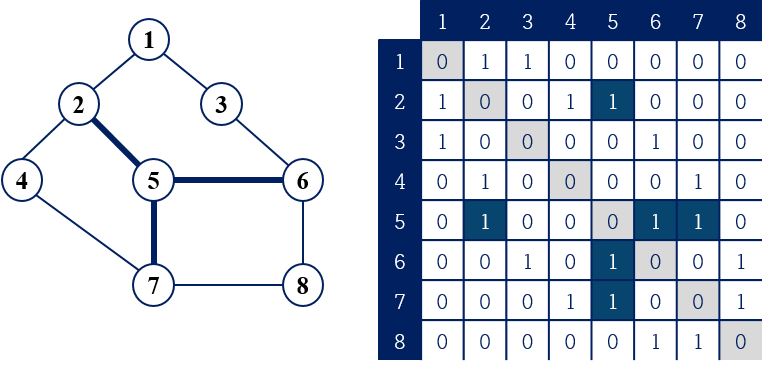
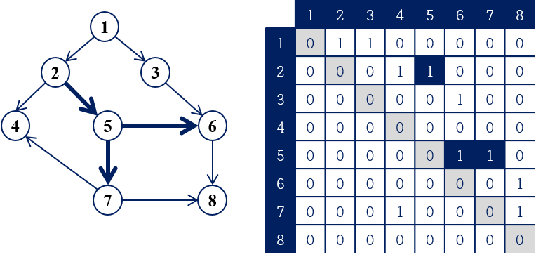
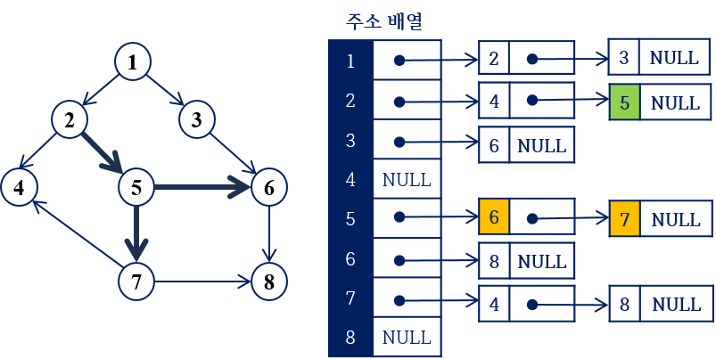
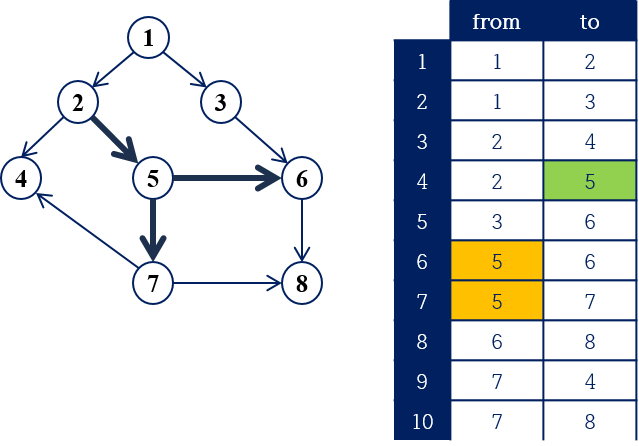
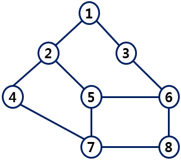

그래프 소개¶
그래프는 실세계의 모습을 추상화하기에 좋은 도구이다. 따라서, 실세계의 많은 문제들은 그래프 문제로 분류된다. 몇몇 그래프 문제들은 효율적인 방법이 있지만, 그렇지 않은 문제들도 많다.
그래프는 개체(인간, 사물, 개념...)들과 그들 사이의 관계를 표현한다.
- 지도(Maps)
- 웹(Web, Hypertexts)
- 전자 회로(Circuits)
- 스케쥴링(Schedule)
- 네트워크(Computer or Social network)
- . . .
그래프¶
그래프는 정점(Vertex)들과 간선(Edge)들의 집합이다.
그래프는 G, 정점들의 집합은 V, 그리고, 간선들의 집합은 E 로 표현한다. 정점의 수는 |V|, 간선의 수는 |E| 로 나타낸다.
정점과 간선¶
-
아래 그래프에서 정점은 {A, B, C, D, E}이다.
-
간선은 (A, B), (B, C), (B, D), (C, D), (D, E)이다.
- 간선은 연결하는 두 정점으로 표현한다.
-
간선은 방향성을 가질 수 있다.
-
방향성이 없는 그래프는 무향 그래프(Undirected Graph)라 하고, 방향성을 가진 그래프를 유향 그래프(Directed Graph)라 한다.

무향 그래프는 친구 관계와 같이 상호 대칭적인 관계를 나타내고, 유향 그래프는 작업 순서와 같이 선후 관계나 의존 관계등을 표현하기에 적합하다.
인접¶
무향 그래프에서 두 정점 u, v 사이에 간선이 존재하면 두 정점은 서로 인접해 있다고 한다.
유향 그래프에서 정점 u에서 정점 v로 나가는 간선이 존재하면, v는 u에 인접하지만 u는 v에 인접해 있지 않다.
- 위 그림의 왼쪽 무향 그래프에서 B의 인접 정점은 A, C, D 이다.
- 위 그림의 오른쪽 유향 그래프에서 B의 인접 정점은 D 뿐이다.
많은 그래프 알고리즘들은 기본적으로 임의의 정점에 인접한 정점들을 찾는 것을 포함한다.
Tip
- 그래프의 간선수는 최대 |V|(|V|-1)/2 만큼 있을 수 있다.
- 간선을 저장하기 위한 배열의 크기를 정할 때 필요하다.
가중치¶
간선에 가중치를 가질 수 있다. 도시들을 정점으로 하고, 그들 사이에 연결된 도로를 간선으로 표현할 수 있다. 도시 사이를 이동하는 드는 비용의 정도를 가중치로 표현할 수 있다.

임의의 정점에서 출발해서 간선을 따라 다른 정점으로 갈 수 있다. 이때, 두 정점 사이에 경로(path)가 있다고 한다. 경로는 간선들을 연결해서 표현하거나 방문하는 정점들을 나열해서 나타낸다.
1번 그림에서 정점 A에서 정점 E로 가는 경로는 (A, B) (B, D) (D, E) 또는 A-B-D-E 로 나타낼 수 있다.
2번 그림에서 정점 B에서 출발해서 D, C를 거쳐서 다시 B로 돌아올 수 있다. 이와 같이 경로상에 이미 거쳐간 정점을 다시 방문하게 되면 싸이클(cycle)이 있는 것이다.
DAG¶
유향 그래프의 특별한 형태로 DAG(Directed Acyclic Graph)가 있다. DAG는 싸이클을 포함하지 않는 유향 그래프이다.
DAG는 스케쥴링을 위해 많이 사용된다. 처리해야할 작업들이 있고 이들 사이의 선행 관계가 있다. 선행 관계는 간선의 방향성으로 표현할 수 있다.
그림에서 정점은 작업들이고, 1에서 2로 나가는 간선이 의미하는 것은 1번 작업은 2번 작업 보다 선행되어야 함을 의미한다.

DAG에서 정점들을 나열하는 문제는 위상 정렬(topological sort)에서 설명한다.
그 외.¶
-
완전 그래프(Complete Graph): 정점들 사이에 간선이 모두 존재하는 그래프.
-
결합 그래프(Connected Graph): 모든 정점 쌍에 경로가 존재하는 그래프.
- 결합 그래프가 아닌 경우에는 결합 컴포넌트(Connected Component)들이 있다.
-
트리(tree)는 싸이클을 포함하지 않는 하나의 결합 그래프이다.
그래프 표현¶
그래프 문제를 계산하기 위해서는 데이터로 저장해야 한다. 그래프를 메모리에 어떻게 표현하는지 알아보자.
그래프를 메모리에 저장할 때 간선들을 저장하게 된다.
그래프에 포함된 간선들을 저장한다. 즉, 각 정점마다 인접 정점들의 대한 정보를 저장하면 된다.
그래프 표현 방법은 다음과 같다.
- 인접 행렬(Adjacent Matrix)
- 인접 리스트(Adjacent List)
- 간선 리스트 (Edge List)
Tip
- 그래프의 유형에 따라 다르게 표현되는 것을 이해한다.
- 유향 그래프와 무향 그래프, 그리고 가중치가 없는 경우와 있는 경우에 적합한 표현 방법을 이해한다.
인접 행렬¶
먼저, 가중치 없는 무향 그래프를 인접 행렬로 표현하는 방법을 알아보자.
인접 행렬은 |V| \times |V| 배열을 사용한다. 정점들은 배열의 인덱스에 대응된다.
- 정점 i, j에 간선이 있으면 (i행, j열)과 (j행, i열)에 1을 저장한다.
- 두 정점 사이에 간선이 없으면 0을 저장한다.
- 그림에서 5번 정점의 인접 정점들은 2, 6, 7 이다.
- 5번 행의 2, 6, 7열에 1을 저장한다.
- 마찬가지로, 5번 열의 2, 6, 7행에도 1이 저장된다.

간선의 가중치를 가지는 그래프를 저장할 때는 1 대신 간선의 가중치를 저장한다. 0 은 간선이 없음을 나타낸다.
Tip
- 무향 그래프를 인접 행렬로 저장하면 2|E| 만큼 1 이 저장된다.
- 대각선을 기준으로 우상단과 좌하단쪽에 |E| 개씩 1 이 저장된다.
다음 그림은 유향 그래프를 인접 행렬로 표현한 것이다. 간선이 수가 10 개 이므로 1 이 10개 저장되어 있다.
- 5번의 인접 정점에 대해 (5행, 6열)과 (5행, 7열)에 1을 저장한다.
- 2번 정점에서 들어오는 간선은 (2행, 5열)에 저장한다.

한 정점에서 화살표가 나가는 간선의 수는 그 정점의 인접 정점의 수와 같다. 정점에서 나가는 간선의 수를 그 정점의 진출 차수(outdegree)라 하고 들어오는 간선의 수를 진입 차수(indegree)라고 한다.
- 5번 정점의 진입차수 = 1 이고, 진출 차수 = 2 이다.
- 정점 v의 진입차수는 v 열에 저장된 1의 개수이고, 진출 차수는 v행에 저장된 1의 개수이다.
인접 리스트¶
그래프를 인접 리스트로 저장하기 위해 연결 리스트(Linked List)를 사용한다. 각 정점의 인접 정점들을 연결 리스트로 저장한다. 따라서, 정점의 수 만큼 연결 리스트가 필요하다.
- 인접 정점은 하나의 노드로 저장된다.
- 가중치 그래프일 경우, 가중치 정보도 노드에 포함한다.

간선 리스트¶
임의의 두 정점 u, v의 간선은 (u, v) 쌍으로 표현 할 수 있다. 간선 리스트는 간선에 대응하는 두 정점쌍을 저장하는 방법이다. 이는 정점의 수에 비해 간선의 수가 매우 작을 때 사용하기도 한다.

그래프 표현 방법과 시간 복잡도¶
그래프 알고리즘의 실행 시간은 그래프의 표현 방법과 관련이 있다. 따라서, 그래프의 표현 방법들에 대한 기본 연산의 시간 복잡도를 이해하는 것이 필요하다.
다음 표는 그래프 표현 방법과 기본 연산에 대한 시간 복잡도를 보인다.
V : 정점수, E : 간선수
| 인접 행렬 | 인접 리스트 | 간선 리스트 | |
|---|---|---|---|
| 메모리 | V^2 | V+E | E |
| 초기화 | V^2 | E | 1 |
| 삭제 | 1 or V | E | 1 |
| 간선 추가 | 1 | 1 | 1 |
| 간선 존재 확인 | 1 | 정점의 차수 | E |
| 인접 정점 찾기 | V | 정점의 차수 | E |
Tip
- 그래프를 저장할 때 |V| \times |V| 배열을 생성해서 인접 리스트 처럼 사용할 수 있다.
- 메모리 낭비가 있지만 구현이 쉽고, 인접 정점을 찾는 시간을 줄일 수 있다.
- 특히, 알고리즘 문제를 풀 때 메모리 제한 내에서 사용할 수 있는 한가지 방법이다.
Python 에서 그래프 저장¶
다음 그림과 같은 그래프를 저장해보자.

- 그래프에 대한 입력 정보는 먼저 정점수 |V| 와 간선수 |E| 가 주어진다.
- 각 정점들을 구분하기 위한 식별 값은 1 부터 V 까지 값을 사용한다.
- 간선수에 해당하는 간선들의 정보가 차례로 주어진다.
- 하나의 간선 정보는 두개의 정점으로 표현된다.
다음은 그림의 그래프에 대한 입력 예시이다. 정점의 수가 크지 않으면 인접 행렬 형태로 주어질 수 있다.
# 간선들의 정보를 한 줄에 모두 주는 경우
8 10
1 2 1 3 2 4 2 5 3 6 4 7 5 6 5 7 6 8 7 8
# 한 간선당 한 줄에 주는 경우
8 10
1 2
1 3
2 4
2 5
3 6
4 7
5 6
5 7
6 8
7 8
파이썬에서는 리스트(List)를 이용해서 인접 리스트 형태로 저장할 수 있다.
예제 코드¶
다음 예제 코드는 앞서 보인 그래프 입력을 받아서 인접 리스트로 저장하는 예제이다. Python 의 List 를 사용하면 인접리스트 형태로 쉽게 저장할 수 있다.
import sys
sys.stdin = open("graph_input.txt", "r")
V, E = map(int, input().split()) # 정점수, 간선수 입력
G = [[] for _ in range(V + 1)] # 인접 리스트 생성
# 정점 번호 1 ~ V
for i in range(E): # 간선 정보 입력
u, v = map(int, input().split())
G[u].append(v)
G[v].append(u) # 무향 또는 유향 그래프인지 주의
for i in range(1, V + 1):
print(i, '-->', G[i])
출력 결과는 다음과 같다.
1 --> [2, 3]
2 --> [1, 4, 5]
3 --> [1, 6]
4 --> [2, 7]
5 --> [2, 6, 7]
6 --> [3, 5, 8]
7 --> [4, 5, 8]
8 --> [6, 7]
Tip
그래프 관련 문제들의 입력 형식
- 인접 행렬 형태
- 간선들의 리스트
- 정점의 정보
- 따로 간선 정보가 주어지지 않는다.
- 완전 그래프로 간주한다.
- 예를 들어, 정점에 대한 좌표 값들이 주어지고, 모든 정점 쌍들 사이에 간선이 있고, 두 좌표의 거리를 가중치로 사용할 수 있다.